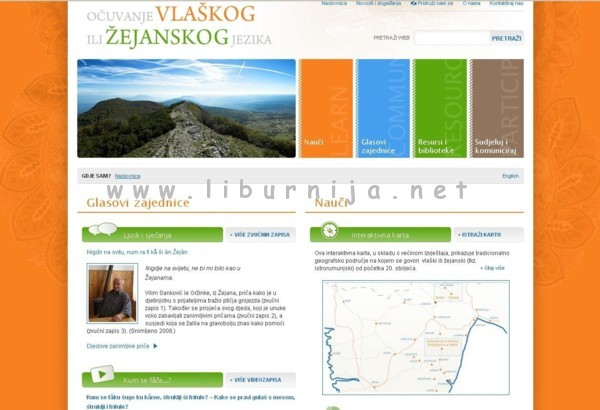

Prema procjenama, u rodnim selima živi još oko 150 izvornih govornika koji tečno govore vlaški i žejanski jezik, a broj se odnosi na govornike koji su jezik naučili kao djeca.
Žejane, Šušnjevica – Proteklog vikenda na dvije lokacije, u Žejanama i Šušnjevici, održana je manifestacija “Dani vlaškog i žejanskog jezika 2012.”.
 Ovogodišnju manifestaciju obilježila je izložba starih fotografija iz digitalne arhive projekta “Očuvanje vlaškog i žejanskog jezika”, pod naslovom “Neka nu me uci… Da me ne zaboraviš…”, te pričaonica na žejanskom jeziku kojoj je povod bio 50-godišnjica uvođenja struje u selo (1962).
Izložene fotografije su podijeljene u nekoliko tematskih cjelina, a na pedeset izloženih fotografija može se vidjeti kako se nekada živjelo na selu te zabilježeni običaji i tradicija.
Inače, kako stoji na stranicama koje se bave ovom temom, Vlaški i žejanski jezik (tkz. istrorumunjski) govori se u Hrvatskoj, u dva odvojena područja na sjeveroistoku istarskog poluotoka. Prvo je područje selo Žejane (Žejân) na sjeveru, smješteno u planinskom dijelu blizu ceste koja vodi od Rijeke do Trsta. Drugo područje obuhvaća nekoliko sela s okolnim zaseocima južno od Žejana (Žejân), oko sjevernog ruba Čepićkog polja, nedaleko ceste koja vodi od Tunela Učka do grada Labina. To su selo Brdo (Bârdo) s nekoliko zaselaka, kao što su Kostrčan(i) (Kostârčån) i Zankovci, Letaj (Letåj), Nova Vas (Noselo), Šušnjevica (Sušnjevicę/Šušnjevicę) i Jesenovik (Sukodru).
Sva su sela zemljopisno bila izolirana sve do prije nekoliko desetljeća. Asfaltiranje cesta 1970-ih i izgradnja tunela kroz Učku 1981. godine omogućili su selima kontakt s lokalnim gradskim centrima, kao što su Matulji, Opatija, Rijeka, Labin, Pazin i Pula, koji su sada udaljeni do sat vremena vožnje. Lakši pristup urbanim zajednicama doveo je do mnogo veće mobilnosti stanovnika, pa sada ima više govornika vlaškog i žejanskog koji žive u lokalnim urbanim centrima nego li u selima. Vlaški i žejanski govore također brojni iseljenici iz tog područja koji su otišli u druge krajeve svijeta, prije svega u Sjedinjene Američke Države, Kanadu i Australiju, većina njih odmah nakon Drugog svjetskog rata te 1960-ih godina.
Prema procjenama članova udruge Tragovi, u rodnim selima živi još oko 150 izvornih govornika koji tečno govore vlaški i žejanski jezik. Broj se odnosi na govornike koji su jezik naučili kao djeca. Od ukupnog broja seoskih stanovnika, koji iznosi oko 400 (točnije, 453 stanovnika prema Popisu 2001. godine), aktivni izvorni govornici, koji tečno govore jezik, prema definiciji drugih tečnih govornika, danas čine manjinu u njihovim rodnim selima.
Povijesno mala, dvojezična enklava, Istrani koji govore vlaški i žejanski dugo su predstavljali ugroženu jezičnu zajednicu sa stalnim smanjenjem broja stanovnika. Naprimjer, krajem 19. stoljeća broj stanovnika koji su u Istri govorili vlaški i žejanski jezik procjenjivao se na otprilike 3000. Do ranih 1960-ih taj je broj pao na 1500; do ranih 1990-ih još se smanjio na 400, a manje od jednog desetljeća kasnije bilo je oko 200 izvornih govornika vlaškog i žejanskog u selima. Procijenili smo da ih 2010. godine ima oko 150.
Organizator izložbe su članovi iz Udruge Tragovi, a postavljanje izložbe fotografija u Žejanama i Šušnjevici poduprli su Ministarstvo kulture Republike Hrvatske, Istarska županija, Primorsko goranska županija, Općina Kršan i Općina Matulji.
Ivan Mellor
August 13, 2012
© 2012 Liburnija